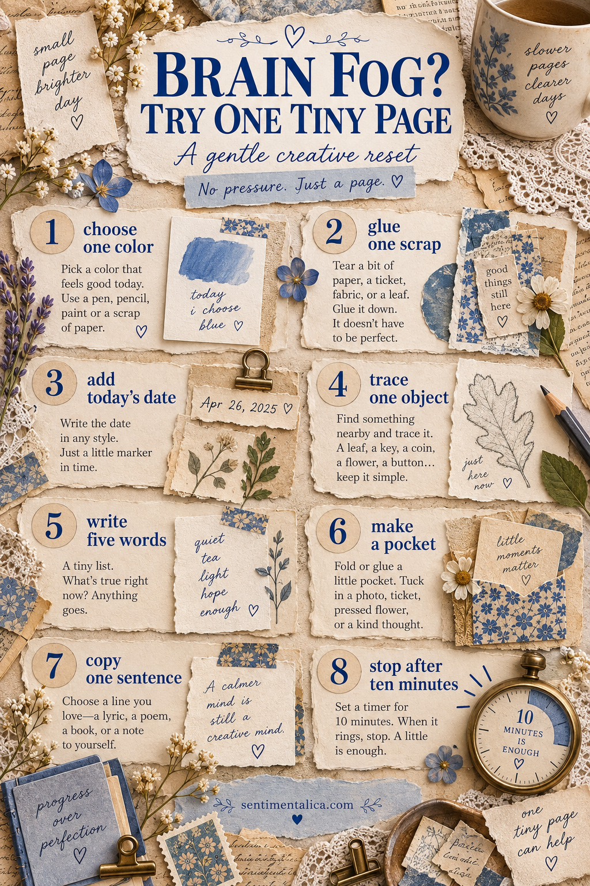

Brain fog can make even pleasant choices feel noisy. On those days, do not ask yourself to invent a beautiful spread. Give your hands one tiny instruction and let the page be small.

Choose one color
Pick the color that feels easiest today. Gather three scraps in that family and one pale neutral. No theme is required.
Glue one scrap
Tear a piece from an envelope, paper bag or old page. Glue it slightly off-center. You have already begun, which is often the hardest part.
Add today’s date
Write it large, tiny, sideways or inside a hand-drawn label. A date gives the page meaning without requiring a full explanation.
Trace one nearby object
A leaf, coin, key or button can provide a shape when your mind cannot. Trace it once or repeat it as a quiet pattern.
Write five true words
Try “quiet, tea, grey, tired, safe.” They do not need to form a sentence. Five words can hold the emotional weather of a day.
Make one little pocket
Fold a scrap on three sides and tuck in a note. The hidden note can be blank, private or completed later.
Copy one sentence
Use a line from a book, a phrase you heard or a reminder to yourself. Copying is a gentle bridge when original writing feels unavailable.
Stop after ten minutes
Set a timer and honour it. Stopping on purpose prevents a calming activity from becoming another unfinished obligation.
Make the setup easier for next time
Keep a small low-energy envelope with neutral scraps, labels, a glue stick and a reliable pen. Avoid filling it with your most precious supplies; the point is permission, not performance.
Brain fog is not a creative failure. A tiny page can simply say, “I was here today.” That is already a record, and already enough.
Reduce the number of decisions
Decision-making often costs more energy than the actual craft. Choose a default page formula you can repeat: one neutral background, one colored scrap, one object and one sentence. Store those four categories together so you do not need to search the whole room.
Try making a “yes bowl” from safe, ordinary scraps. When focus is poor, pull one piece and use it without comparison. The goal is not to create your best page; it is to keep a gentle relationship with creativity.
If cutting feels difficult, use whole labels or tear paper by hand. If writing feels difficult, date the page and add one weather word. If glue feels like too much, arrange the pieces, photograph them and return later. An unglued composition can still be a creative act.
Most importantly, do not use the page to judge your productivity or health. Let it record capacity honestly. Some days hold elaborate spreads. Some hold one blue square and the word “tired.” Both belong in the same life.